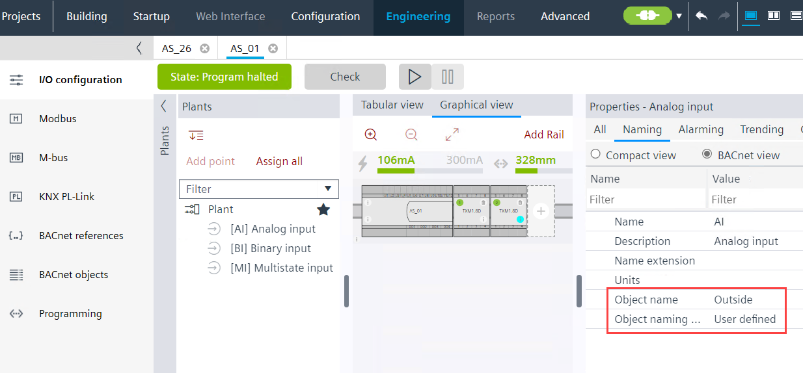

将对象名称修改为用户定义的对象名称
这是一个单一的工作流程描述，说明如何修改层次结构之外的对象名称。
Note：如果您更改标准名称，例如将 TSu 更改为 myTSu，则 Desigo CC 和 Desigo Control Point 中的自动功能将不再起作用。需要重新设计，这会导致管理站产生额外成本。
INFO：使用功能Changing BACnet object names and descriptions为了提高效率，如果必须重命名大量数据点。
- A plant with data points exists.
Creating plants
Creating I/O data points - (Optional) Activate the Show property on adding objects to get the Object name field visible and editable.
Plant automation tab
- Go to Building > Building structure.
- Right-click a device and select Go to engineering.
- Open the I/O configuration task.
- In the Plants navigation view, select a data point.
- Select the Properties view tab.
- Select the Naming tab and click BACnet view.
- From the Object naming rule drop-down list, select User defined.
Note: It is not advisable to use this function together with the user designation, because both functions use the same data source. This may prevent a consistent view of the data point description. - In the Object name text box, modify the name as required.
